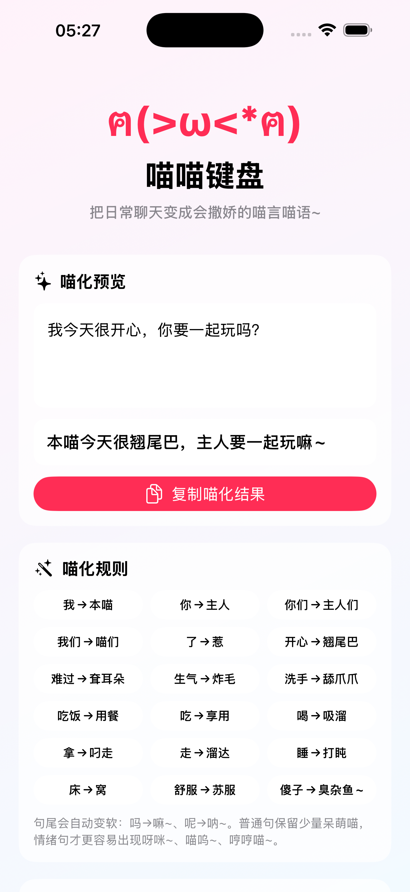
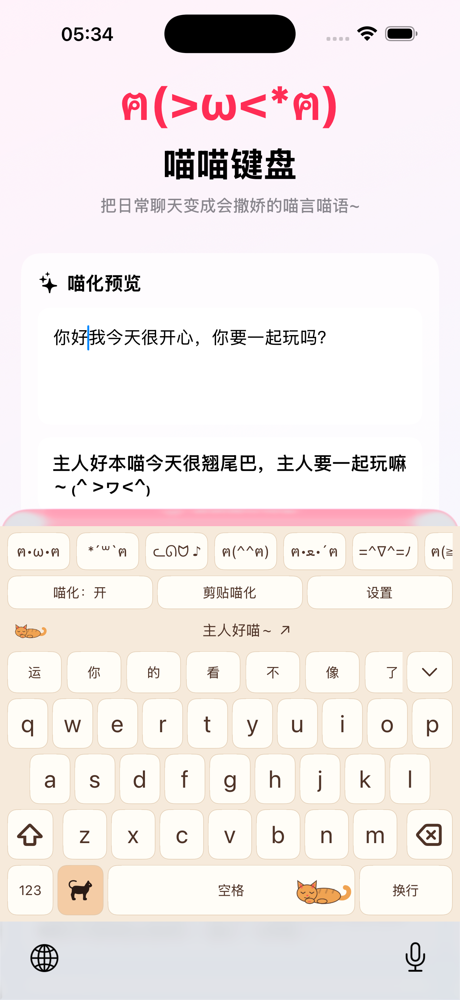
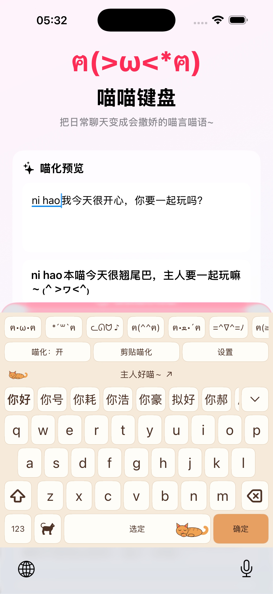
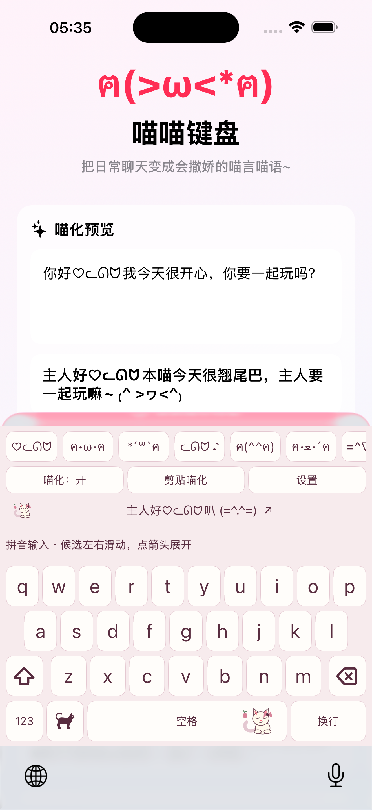
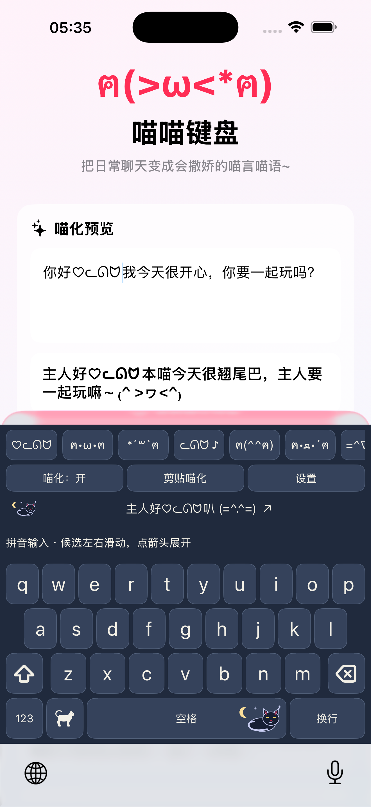

一只住进键盘的小猫让聊天多一些
让聊天多一些
喵言喵语。
认真说话，也可以可爱一下。
先看喵化预览，再决定怎样表达。
iPhone 与 iPad · 已在部分 App Store 地区提供 · 中国大陆正在办理备案

小情绪，有猫猫懂从开心滑到撒娇，
从开心滑到撒娇，
找到属于你的表情。
完整分类连续浏览，点底部图标就能定位。喜欢的颜文字点一下插入，最近使用会出现在顶部快捷条。
Unicode 文本颜文字，可直接插入聊天。

三种心情，一样顺手。



也保留经典纯色。打开键盘设置 → 换皮肤，即刻切换。
可爱，也照顾日常输入。
26键与九宫格、中英文切换、展开候选、长按空格移动光标。选中文用“选定”，提交剩余原始字母用“确定”。
安装后，这样开始。
- 打开系统设置 → 通用 → 键盘 → 键盘。
- 点击“添加新键盘”，选择“喵喵键盘”。
- 在普通输入框长按地球图标，切换到喵喵键盘。
基础输入无需完全访问。“剪贴喵化”在你主动点击时读取剪贴板，需要相应系统权限。
查看完整使用帮助 →